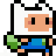
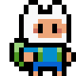
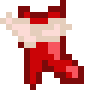
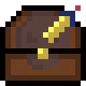
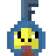

Finn Found Da Chest

Finn Found Da Chest is a 2D adventure game inspired by the Adventure
Time universe. In this game, players control Finn the Human as he
explores a mysterious world filled with obstacles and challenges.
How to Play


Controls:
- Movement: ZQSD or arrow keys
- Toggle Debug Mode: T (Press once to show player coordinates and
latency, press again to hide)
- Debugging:
- Show FPS while playing: Displayed in the terminal
- Show Latency: Displayed in the terminal (when debug mode is
toggled)
- Show Player Coordinates: Displayed in the terminal (when debug mode
is toggled)

Goal:
- Explore the world to find keys that unlock doors.
- Use keys to unlock doors and progress through the game.
- Find the treasure chest and unlock it with a key to win the
game.

Notes:
- The game is a speedrun-style adventure.
- Graphics feature custom sprites of Finn created by Gaspard
Catry.
- The map layout is fixed and not randomly generated.
- Additional features and improvements may be implemented in the
future, but no updates are planned at this time.
Generating Pandoc
To generate the Pandoc HTML output, use the following command:
bash pandoc FinnFoundDaChest.md -o FinnFoundDaChest.html --css=./css/style.css --standalone --section-divs
Prerequisites:objectsur local machine.
Navigate to the project directory.
Compile the Java files:
bash javac -d ./bin ./src/*.java
Run the game:
bash java -cp ./bin:./res main.Main
Run the game with the run command:
bash bash ./run
Credits:
- Game development based on tutorials by RyiSnow: YouTube
- Additional code and modifications by Gaspard Catry